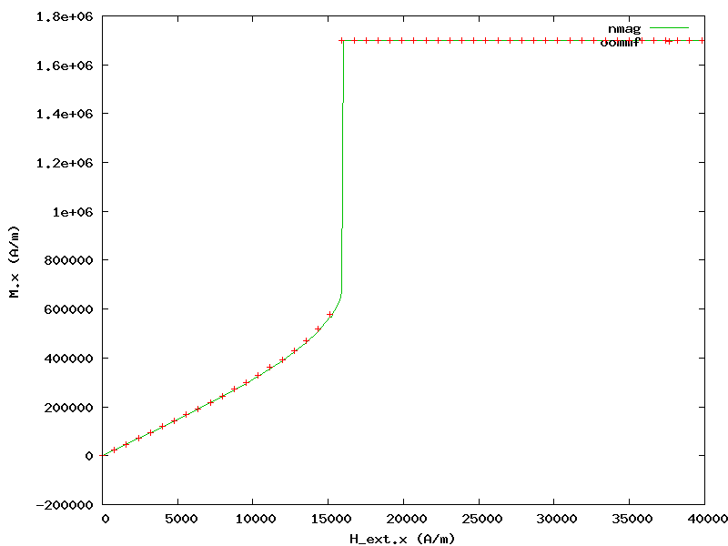

In this example we will study the behaviour of a 10 x 10 x 10 nm iron cube with cubic_anisotropy in an external field.
import nmag
from nmag import SI, si
# Create the simulation object
sim = nmag.Simulation()
# Define the magnetic material (data from OOMMF materials file)
Fe = nmag.MagMaterial(name="Fe",
Ms=SI(1700e3, "A/m"),
exchange_coupling=SI(21e-12, "J/m"),
anisotropy=nmag.cubic_anisotropy(axis1=[1, 0, 0],
axis2=[0, 1, 0],
K1=SI(48e3, "J/m^3")))
# Load the mesh
sim.load_mesh("cube.nmesh", [("cube", Fe)], unit_length=SI(1e-9, "m"))
# Set the initial magnetisation
sim.set_m([0, 0, 1])
# Launch the hysteresis loop
Hs = nmag.vector_set(direction=[1.0, 0, 0.0001],
norm_list=[0, 1, [], 19, 19.1, [], 21, 22, [], 50],
units=0.001*si.Tesla/si.mu0)
sim.hysteresis(Hs)
We will now discuss the cube.py script step-by-step:
After creating the simulation object we define a magnetic material Fe with cubic anisotropy representing iron:
Fe = nmag.MagMaterial(name="Fe",
Ms=SI(1700e3, "A/m"),
exchange_coupling=SI(21e-12, "J/m"),
anisotropy=nmag.cubic_anisotropy(axis1=[1,0,0],
axis2=[0,1,0],
K1=SI(48e3, "J/m^3")))
We load the mesh and set initial magnetisation pointing in +z direction (that is, in a local minimum of anisotropy energy density).
Finally, we use hysteresis to apply gradually stronger fields in +x direction (up to 50 mT):
Hs = nmag.vector_set(direction=[1.0, 0, 0.0001],
norm_list=[0, 1, [], 19, 19.1, [], 21, 22, [], 50],
units=0.001*si.Tesla/si.mu0)
Note that we sample more often the region between 19 and 21 mT where magnetisation direction changes rapidly due to having crossed the anisotropy energy “barrier” between +z and +x (as can be seen in the graph below).
First, we extract the magnitude of the applied field and the x component of magnetisation:
ncol cube H_ext_0 M_Fe_0 > cube_hext_vs_m.txt
Then we compare the result with OOMMF’s result (generated from the equivalent scene description oommf/cube.mif) using the following Gnuplot script:
set term png giant size 800,600
set out 'cube_hext_vs_m.png'
set xlabel 'H_ext.x (A/m)'
set ylabel 'M.x (A/m)'
plot 'cube_hext_vs_m.txt' t 'nmag' w l 2,\
'oommf/cube_hext_vs_m.txt' u ($1*795.77471545947674):2 ti 'oommf' w p 1
which gives the following result:
Nmag provides advanced capabilities to conveniently handle arbitrary-order anisotropy energy functions. Details can be found in the documentation of the MagMaterial class.